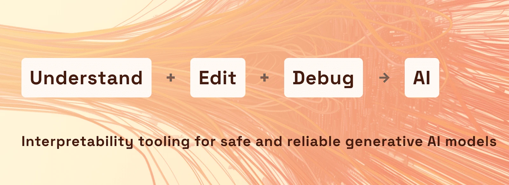
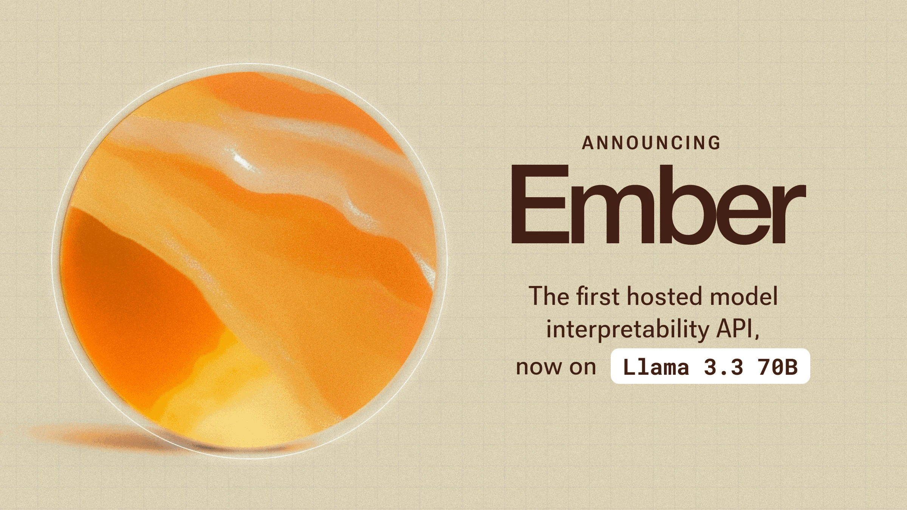
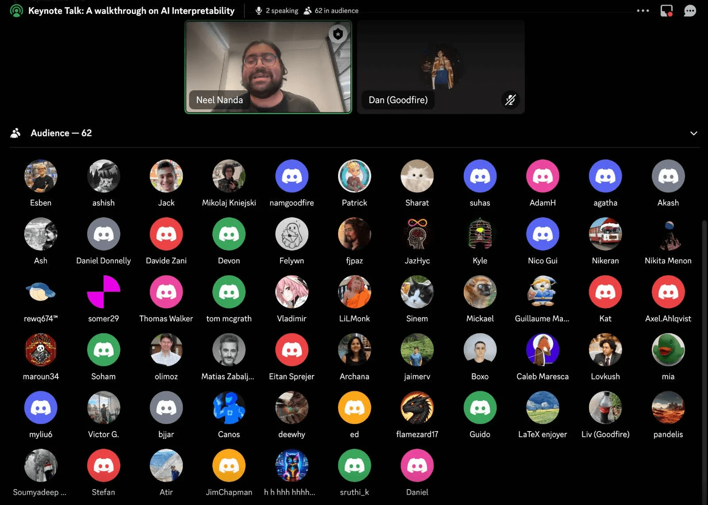
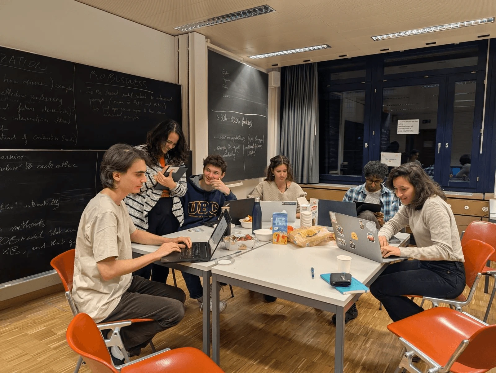

At the end of November 2024, I helped run the Reprogramming AI Models Hackathon at Apart Research, a 48-hour event where 200+ researchers from 15+ countries came together to push the boundaries of AI interpretability. Apart partnered with Goodfire to give every participant access to their newly released Ember API, an interpretability platform that lets researchers peek inside large language models and steer their internal features directly.
What we saw over that weekend was remarkable. Teams taught AI models to play games by manipulating neural features. They built adversarial-attack detectors. They explored "unlearning" harmful capabilities while preserving beneficial ones. They tackled the kind of problems that, until very recently, were locked behind significant computational resources and specialised expertise.
As AI systems become more powerful and widespread, the ability to understand and control their internal workings isn't an academic exercise. It's load-bearing for building safe and reliable AI. That's why Goodfire's work matters, and why we were so excited to put their tools in the hands of researchers at scale.
After the hackathon wrapped, I sat down with Myra Deng, founding PM at Goodfire, to talk about what it took to build the Ember API, how the hackathon stress-tested it, and where they see interpretability research heading next.

Making interpretability accessible
Archana: The field of mechanistic interpretability has historically been limited to researchers with significant computational resources and specialised knowledge. How is Goodfire changing this landscape?
"We're a research lab advancing the field of AI interpretability. Our mission is to solve the technical alignment problem for powerful AI systems. We believe that major advances in mechanistic interpretability, understanding how AI systems work internally, are key to solving this challenge. At the core of our work is creating accessible tools that accelerate interpretability research."
Archana: What inspired the development of your feature steering API?
"Our work builds on recent research developments showing that human-interpretable features can be extracted from and edited in LLMs. Model editing and steering represent one of the most promising applications of current-day interpretability research. Through our now publicly released hosted API, Ember, we've made it possible to conduct large-scale research in an accessible way. We designed Ember to be easy to set up and use, making interpretability research accessible to anyone interested in exploring this field."
The technical foundations: SAE-derived features
Archana: Your API achieved something remarkable during the hackathon, enabling teams to build everything from adversarial detectors to moral reasoning analysers. The projects achieved impressive results using your SAE-derived features. Could you explain how these features are extracted and what makes them particularly useful for steering?
"We trained state-of-the-art interpreter models (specifically sparse autoencoders, or SAEs) for Llama 8B and 70B on the LMSYS-Chat-1M chat dataset and generated high-quality, human-readable labels for features using an automated interpretability pipeline. We evaluated a number of SAEs trained with different hyperparameters and ran internal benchmarking to measure relative steering performance. We then chose the best SAE and made it accessible via the API."
You can read a more detailed report on Goodfire's approach in their research post "Understanding and Steering Llama 3".

What enabled the versatility
Archana: We saw teams using your API for everything from adversarial detection to model unlearning. What technical capabilities enabled this versatility?
"We designed a simple interface that focuses on Sparse Autoencoder (SAE) features as the primary building block. Through our Features API, users can modify existing models like Llama 3.1 8B by adjusting feature weights. After extensive experimentation and benchmarking, we discovered the most effective methods for feature modification and made these insights available through our API."
Archana: How does your approach to feature identification differ from other interpretability tools?
"We defined three ways to find features you may want to modify. Auto Steer: simply describe what you want, and let the API automatically select and adjust feature weights. Feature Search: find features using semantic search. Contrastive Search: identify relevant features by comparing two different datasets."
Stress-testing the API with 200+ researchers
The hackathon revealed an emerging pattern in how researchers approach interpretability problems. With nearly 250 participants from 15+ countries, we saw a remarkable diversity of approaches to using Goodfire's tools.
Archana: The winning projects demonstrated novel applications of your tools. Were there any implementations that surprised you or opened new possibilities?
"We've consolidated some of the projects we were really impressed with in this Twitter thread. We found it really valuable to have a group of around 200 participants hacking on our API over a short period of time. We got a chance to stress-test our infrastructure's ability to handle concurrent load, and we made a number of modifications to our API and documentation in response to participants' feedback. For example, we made it really easy to look up features by their indices."

What makes this interview particularly compelling is the context: Goodfire's tools weren't tested in isolated experiments. They were battle-tested by hundreds of researchers simultaneously. The hackathon served as both a proof-of-concept for the API's robustness and a fountain of novel applications.
What's next for the roadmap
Archana: After seeing so many participants work with your tools, what patterns emerged in how researchers approach interpretability problems? How has the feedback from hackathon participants influenced your roadmap?
"We've seen huge interest in feature steering capabilities from everyone, both hobby API users and experienced interpretability researchers. We're particularly excited about refining how we find effective feature interventions for steering. Looking ahead, we want to support the latest open-source models. We believe that to truly understand AI, we need access to the internal workings of models that show emergent behaviours: things like reasoning, complex coding, and other increasingly advanced capabilities."
As we move forward, the insights gained from this hackathon and the growing community of interpretability researchers may well prove crucial in shaping the future of AI development. Through events like this and tools like Ember, the field isn't just observing AI's evolution. It's actively participating in making it more transparent, controllable, and aligned with human values.

Advice for researchers getting started
Archana: What advice would you give to researchers looking to get started with your interpretability tools?
"Check out our docs for a quickstart guide, and read up on some background with resources like Understanding and Steering Llama 3. Three areas we're currently excited about include: improving feature steering performance with auto-steering, using feature steering to make models more robust to jailbreaks, and developing more interpretable classifier models built on features."
Archana: What role do you see hackathons and community events playing in advancing interpretability research?
"We're really excited to keep hosting hackathons with the interpretability community. These events have proven to be incredibly valuable. They're great for meeting and working with peers, getting interpretability newcomers involved in research, and sparking fresh ideas."
The bottom line
The hackathon served as a stress test for Goodfire's API, with hundreds of researchers simultaneously pushing the boundaries of what's possible with interpretability tools. Projects ranged from novel security applications to groundbreaking control mechanisms, demonstrating the versatility and robustness of the platform.
More than that, the weekend reminded me why I love this work. You give 200 brilliant people access to a tool that used to be locked behind a research lab, and they come back 48 hours later with ideas none of us had thought of. That's the entire point of hackathons in AI safety, and it's the entire point of accessible interpretability tools like Ember.